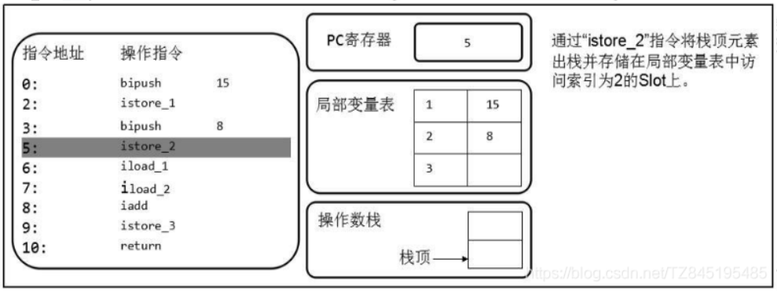
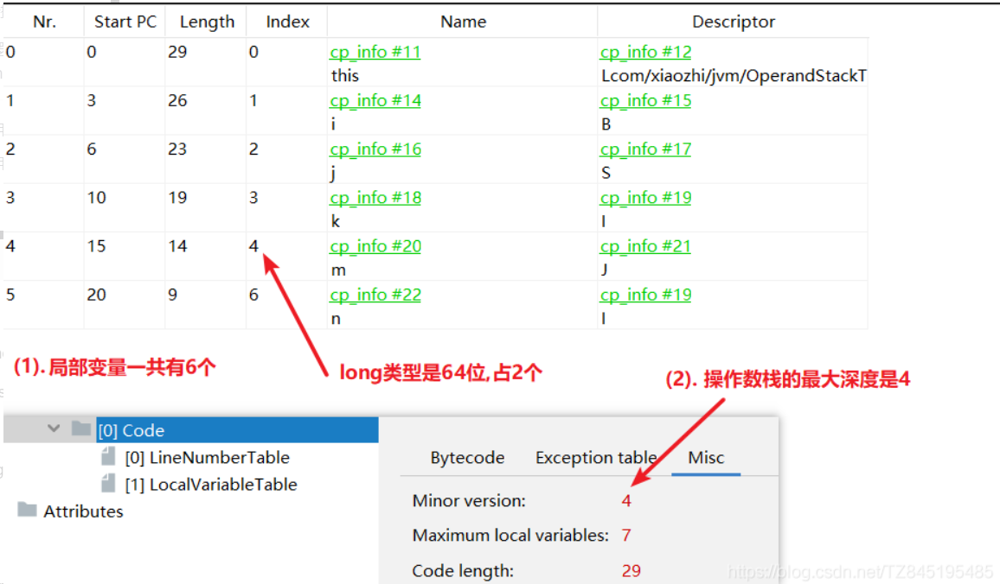

深入理解JVM
JVM概述
什么是JVM
- JVM 是 java虚拟机，是用来执行java字节码(二进制的形式)的虚拟计算机
- JVM是运行在操作系统之上的，与硬件没有任何关系
Java的跨平台及原理

- 跨平台：由Java编写的程序可以在不同的操作系统上运行。一次编写，多处运行
- 原理：编译之后的字节码文件和平台无关，需要在不同的操作系统上安装一个对应版本的虚拟机(JVM) (Java虚拟机不和包括java在内的任何语言绑定，它只与class文件这种二进制文件格式所关联。无论使用何种语言进行软件开发，只要将源文件编译为正确的Class文件，那么这种语言就可以在Java虚拟机上执行，可以说，统一而强大的Class文件结构，就是Java虚拟机的基石、桥梁)
JVM的组成

- 类加载子系统
- 运行时数据区[我们主要关注这里的堆、栈、方法区]
- 执行引擎(一般都是JIT编译器和解释器共存)
名词解释
JIT(即时编译器): 主要影响性能。在部分商用虚拟机中（如HotSpot），Java程序最初是通过解释器（Interpreter）进行解释执行的，当虚拟机发现某个方法或代码块的运行特别频繁时，就会把这些代码认定为“热点代码”。为了提高热点代码的执行效率，在运行时，虚拟机将会把这些代码编译成与本地平台相关的机器码，并进行各种层次的优化，完成这个任务的编译器称为即时编译器（Just In Time Compiler，下文统称JIT编译器）。
即时编译器并不是虚拟机必须的部分，Java虚拟机规范并没有规定Java虚拟机内必须要有即时编译器存在，更没有限定或指导即时编译器应该如何去实现。但是，即时编译器编译性能的好坏、代码优化程度的高低却是衡量一款商用虚拟机优秀与否的最关键的指标之一，它也是虚拟机中最核心且最能体现虚拟机技术水平的部分。
解释器：负责响应时间。逐行解释字节码。
三大商业虚拟机
- Sun HotSpot
- 它是Sun JDK和OpenJDK中所带的虚拟机，也是目前使用范围最广的Java虚拟机
- BEA JRocket
- 专注于服务端应用(JRockit内部不包含解释器实现，全部代码都靠即时编译器编译后执行)
- iBM J9
- 市场定位与hotspot接近，服务器端，桌面应用，嵌入式等
类的加载过程
类的加载分几步？

按照JAVA虚拟机规范，从class文件到加载到内存中的类，到类卸载出内存为止，它的整个生命周期包括7个阶段：
- 过程一：加载(Loading)
- 过程二：链接(Linking)，又分为三个部分
- 验证(Verification)
- 准备(Preparation)
- 解析(Resolution)
- 过程三：初始化(Initialization)
- 过程四：使用(Using)
- 过程五：卸载(Unloading)
在JAVA中数据类型分为基本数据类型和引用数据类型。基本数据类型由虚拟机预先定义。引用数据类型则需要进行类的加载。
过程一：加载(Loading)

类的加载指的是将类的.class文件中的二进制数据读取到内存中，存放在运行时数据区的方法区中，并创建一个大的Java.lang.Class对象，用来封装方法区内的数据结构。
在加载类时，Java虚拟机必须完成以下三件事情：
- 通过类的全名，获取类的二进制数据流
- 将这个字节流所代表的静态存储结构转化为方法区的运行时数据结构(Java类模型)
- 在内存中创建Java.lang.Class类的实例，表示该类型。作为方法区这个类的各种数据的访问入口
对于加载过程，简言之就是将Java类的字节码文件加载到内存中，并在内存中创建出Java类的原型——类模板对象。
类模板对象：Java类再JVM内尊重的一个快照，JVM将从字节码文件中解析出的常量池、类字段、类方法等信息存储到类模板中，这样JVM在运行期间便能通过类模板而获取Java类中的任意信息，能够对Java类的成员变量进行遍历，也能进行Java方法的调用。 |
对于类的二进制数据流，虚拟机可以通过多种途径获得(只要所读取的字节码符合JVM规范即可)：
- 通过文件系统读入.class文件(最常见)
- 读入jar、zip等归档数据包，提取类文件
- 实现放在数据库中的类的二进制数据
- 使用类似于HTTP之类的协议通过网络加载
- 在运行时生成一段Class的二进制信息
Class实例的位置：
类将.class文件加载至方法区(元空间)后，会在堆中创建一个Java.lang.Class对象，用来封装类位于方法区内的数据结构，该Class对象是在加载类的过程中创建的，每个类都对应有一个Class类型的对象。
过程二：链接(Linking)
2-1 验证
验证：确保Class文件的字节流中包含的信息符合当前虚拟机要求，保证被加载类的正确性
- 确保Class文件的字节流中包含信息符合当前虚拟机的要求，保证被加载类的正确性，不会危害虚拟机自身安全
- 主要包括四种验证：
- 文件格式验证
- 是否以魔数oxCAFEBABE开头
- 主版本和副版本是否在当前Java虚拟机的支持范围内
- 数据中的每一项是否都拥有正确的长度等
- 元数据验证
- 这个类是否有除了Object之外的父类，这个类是否继承了final类？
- 是否实现了父类或接口中要求实现的方法？
- 类中的字段，方法是否与父类产生矛盾？
- 字节码验证
- 符号引用验证
- 文件格式验证
2-2 准备
准备：为类的静态变量分配内存并将其初始化为默认值，这些内存都将在方法区中分配
注意：
这时候进行内存分配的仅包括类变量(static)，而不包括实例变量，实例变量将会在对象实例化时随着对象一起分配在java堆中
这里所设置的初始值通常是数据类型默认的初始值，而不是在Java代码中被显示赋予的值
- 同时被final和static修饰的属性，在准备阶段就会被直接赋值。如下所示，value在准备阶段就会被直接赋值123
public static final int value = 123;
2-3 解析
解析：将常量池中的符号引用转换为直接引用的过程(将类、接口、字段和方法的符号引用转为直接引用)
- 虚拟机在加载Class文件时才会进行动态链接，也就是说，Class文件中不会保存各个方法和字段的最终内存布局信息，因此，这些字段和方法的符号引用不经过转换时无法直接被虚拟机使用的。当虚拟机运行起来时，需要从常量池中获得对应的符号引用，再在类加载过程中(初始化阶段)将其替换成直接引用，并翻译到具体的内存地址中
- 符号引用: 符号引用以一组符号来描述所引用的目标，符号可以是任何形式的字面量，只要使用时能无歧义地定位到目标即可。符号引用与虚拟机实现的内存布局无关，引用的目标并不一定已经加载到了内存中
- 直接引用: 直接引用可以是直接指向目标的指针，相对偏移量或是一个能间接定位到目标的句柄。直接引用是与虚拟机实现的内存布局相关的，同一个符号引用在不同虚拟机实例上翻译出来的直接引用一般不会相同。但是它们能接受的符号引用都是一致的，因为符号引用的字面量形式明确定义在Java虚拟机规范的Class文件格式中。如果有了直接引用，那就说明目标必定已经存在于内存之中了
- Java虚拟机规范并没有明确要求解析阶段一定要按照顺序执行。在HotSpot VM中，加载、验证、准备和初始化会按照顺序有条不紊地执行，但链接阶段中的解析操作往往会伴随着JVM在执行完初始化之后再执行
- 符号引用有：类和接口的全限定名，字段的名称和描述符，方法的名称和描述符
过程三：初始化(Initialization)
初始化：
为类变量赋予正确的初始化值
初始化阶段就是执行类构造器方法<clinit>()的过程。此方法不需要定义，是javac编译器自动收集类中的所有变量的赋值动作和静态代码块中的语句合并而来
若该类具有父类，JVM会保证子类的<clinit>()执行前，父类的<clinit>()已经执行完成。clinit不同于类的构造方法(init)(由父及子，静态先行)
Java编译器不会为所有的类都产生<clinit>()初始化方法。哪些类在编译为字节码后，字节码中不会包含<clinit>()方法？
- 一个类中没有声明任何的静态变量，也没有静态代码块时
- 一个类中声明静态变量，但是没有明确使用类变量的初始化语句以及静态代码块来执行初始化操作时
- 一个类中包含static final修饰的基本数据类型的字段。如果这个static final变量不是通过方法或者构造器指定，则在链接阶段赋值；如果通过调用方法赋值，则也会生成<clinit>()
<clinit>()的调用会死锁么？
- 虚拟机会保证一个类的<clinit>()方法在多线程环境中被正确地加锁、同步，如果多个线程同时去初始化一个类，那么只会有一个线程去执行这个类的<clinit>()方法，其他线程都要阻塞等待，直到活动线程执行<clinit>()方法完毕
public class ClassInitTest { |
主动引用(触发在初始化阶段的Clinit方法)
当创建一个类的实例时，比如使用new关键字，或者通过反射、克隆、反序列化
访问某个类或接口的静态变量，或者对该静态变量赋值
调用类的静态方法
初始化一个子类(当初始化子类时，如果发现其父类还没有进行过初始化，则需要先触发其父类的初始化)
当虚拟机启动时，用户需要指定一个执行的主类(包含main()方法的类)，虚拟机会先初始化这个主类
JDK7开始提供的动态语言支持(涉及解析REF_getStatic、REF_putStatic、REF_invokeStatic方法句柄对应的类)
如果一个接口定义了default方法，那么直接实现或者间接实现该接口类的初始化，该接口要在其之前被初始化
# 注意,如果把A接口中的默认方法注释,那么就只输出:子类初始化......
输出:
CompareB的初始化
子类初始化.....
public class DemoB implements A{
static{
System.out.println("子类初始化......");
}
public static void main(String[] args) {
}
}
interface A{
public static final Thread t = new Thread() {
{
System.out.println("CompareB的初始化");
}
};
default void method1(){
System.out.println("====");
}
}
被动引用
除了以上的情况属于主动引用，其他的情况均属于被动引用。被动引用不会引起类的初始化，意味着没有<clinit>()的调用
调用ClassLoader类的loadClass()方法加载一个类，并不是对类的主动使用，不会导致类的初始化
当访问一个静态字段时，只有真正声明这个字段的类才会被初始化
当通过子类引用父类的静态变量，不会导致子类初始化
引用常量不会触发此类或接口的初始化。因为常量在链接阶段就已经被显式赋值了
通过数组定义类引用，不会触发此类的初始化
# 这里不会进行初始化,因为相当于parent只开辟了空间,没赋值
Parent[] parent = new Parent[10];
使用(Using)
- 任何一个类型在使用之前都必须经历过完整的加载、链接和初始化3个类加载步骤。一旦一个类型成功经历过这3个步骤之后，就可以使用了
- 开发人员可以在程序中访问和调用它的静态类成员信息(比如：静态字段、静态方法)或者使用new关键字为其创建对象实例
卸载(Unloading)
- 类、类的加载器、类的实例之间的引用关系
- 在类加载器的内部实现中，用一个Java集合来存放所加载类的引用。另一方面，一个Class对象总是会引用它的类加载器，调用Class对象的getClassLoader()方法，就能获得它的类加载器。由此可见，代表某个类的Class实例与其类的加载器之间为双向关联关系。
- 一个类的实例总是引用代表这个类的Class对象。在Object类中定义了getClass()方法，这个方法返回代表对象所属类的Class对象的引用。此外，所有的Java类都有一个静态属性class，它引用代表这个类的Class对象
方法区的垃圾回收
- 方法区的垃圾回收机制主要回收两部分内容：常量池中废弃的常量和不再使用的类型
- HotSpot虚拟机对常量池的回收策略是很明确的，只要常量池中的常量没有被任何地方引用，就可以被回收
- 判定一个常量是否”废弃”还是相对简单，而要判定一个类型是否属于”不再被使用的类”的条件就比较苛刻了，需要同时满足下面三个条件
类的卸载
- 启动类加载器加载的类型在整个运行期间是不可能被卸载的
- 被系统类加载器和扩展类加载器加载的类型在运行期间不太可能被卸载，因为系统类加载器实例或者扩展类的实例基本上在整个运行期间总能直接或者间接的被访问，其达到unreachable的可能性极小
- 开发者自定义的类加载器实例加载的类型只有在很简单的上下文环境中才能被卸载，而且一般还要借助于强制调用虚拟机的垃圾回收功能才可以做到。可以预想，稍微复杂点的应用场景中(比如: 很多时候用户在开发自定义类加载器实例的时候采用缓存的策略以提高系统性能)，被加载的类型在运行期间也是几乎不太可能被卸载的(至少卸载的时间是不确定的)
类加载器 ClassLoader
- ClassLoader的作用
- ClassLoader是Java的核心组件，所有的Class都是由ClassLoader进行加载的，ClassLoader负责通过各种方式将Class信息的二进制数据流读入JVM内部，转换为一个与目标类对应的java.lang.Class对象实例。然后交给Java虚拟机进行链接、初始化等操作。因此，ClassLoader在整个加载阶段只能影响到类的加载，而无法通过ClassLoader去改变类的链接和初始化行为。至于他是否可以运行，则由Execution Engine决定
- .class文件的显示加载与隐式加载的方式是指JVM加载class文件到内存的方式(在日常开发以上两种方式一般会混合使用)
- 显式加载：指的是在代码中通过调用ClassLoader加载class对象，如直接使用Class.forName(name)或getClassLoader().loadClass()加载class对象
- Class.forName(name)会执行类的加载、链接及初始化
- getClassLoader().loadClass()只会执行类的加载
- 隐式加载：则是不直接在代码中调用ClassLoader的方法加载class对象，而是通过虚拟机自动加载到内存中，如在加载某个类的class文件时，该类的class文件中引用了另外一个类的对象，此时额外引用的类将通过JCM自动加载到内存中
- 显式加载：指的是在代码中通过调用ClassLoader加载class对象，如直接使用Class.forName(name)或getClassLoader().loadClass()加载class对象
类加载器的分类与测试
类加载器的介绍
- JVM支持两种类型的类加载器，分别为引导类加载器(Bootstrap ClassLoader)和自定义类加载器(User-Defined ClassLoader)
- 从概念上来讲,自定义类加载器一般指的是程序中由开发人员自定义的一类类加载器,但是Java虚拟机规范并没有这么定义,而是将所有派生于抽象类ClassLoader的类加载器都划分为自定义类加载器
- 无论类加载器的类型如何划分, 在程序中我们常见的类加载器如下所示。除了顶层的启动类加载器外, 其余的类加载器都应当有自己的”父类”加载器

启动(引导)类加载器 Bootstrap ClassLoader
- 这个类加载使用C/C++语言实现的, 嵌套在JVM内部
- 它用来加载Java的核心类库(JAVA_HOME/jre/lib/rt.jar、resource.jar或sum.boot.class.path路径下的内容),用于提供JVM自身需要的类(String类就是使用的这个类加载器)
- 由于安全考虑,Bootstrap启动类加载器只加载包名为java、javax、sun等开头的类
- 并不继承自java.lang.ClassLoader,没有父加载器
- 加载扩展类和应用程序类加载器,并指定为他们的父类加载器

扩展类加载器 Extension ClassLoader
- Java语言编写,由sum.misc.Launcher$ExtClassLoader实现
- 派生于ClassLoader类,父类加载器为启动类加载器
- 从java.ext.dirs系统属性所指定的目录中加载类库, 或从JDK的安装目录的jre/lib/ext子目录(扩展目录)下加载类库。如果用户创建的JAR放在此目录下,也会自动由扩展类加载器加载
应用程序(系统)类加载器 App ClassLoader
- java语言编写,由sum.misc.Launcher$AppClassLoader实现
- 派生于ClassLoader类,父类加载器为扩展类加载器
- 它负责加载环境变量classpath或系统属性java.class.path指定路径下的类库
- 该类加载是程序中默认的类加载器, 一般来说, Java应用的类都是由它来完成加载
- 通过ClassLoader的getSystemClassLoader()方法可以获取到该类加载器
用户自定义类加载器
- 在Java的日常应用程序开发中, 类的加载几乎是由上述3种类加载器相互配合执行的, 在必要时, 我们可以自定义类加载器, 来定制类的加载方式(自定义类加载器通常需要继承于ClassLoader)
- 体现Java语言强大生命力和巨大魅力的关键因素之一便是, Java 开发者可以自定义类加载器来实现类库的动态加载, 加载源可以是本地的JAR包, 也可以是网络上的远程资源
- 自定义 ClassLoader 的子类时候,我们常见的会有两种做法
- 重写loadClass()方法(不推荐,这个方法会保证类的双亲委派机制)
- 重写findClass()方法 –> 推荐
- 这两种方法本质上差不多, 毕竟loadClass()也会调用findClass(), 但是从逻辑上讲我们最好不要直接修改loadClass()的内部逻辑。建议的做法是只在findClass()里重写自定义类的加载方法, 根据参数指定类的名字, 返回对应的Class对象的引用。
Class.forName()与ClassLoader.loadClass()的区别
- Class.forName(): 是一个静态方法, 最常用的是Class.forName(String className); 根据传入的类的全限定名返回一个 Class 对象。该方法在将 Class 文件加载到内存的同时, 会执行类的初始化。如:Class.forName(“com.atguigu.java.HelloWorld”);
- ClassLoader.loadClass(): 这是一个实例方法, 需要一个 ClassLoader 对象来调用该方法。该方法将 Class 文件加载到内存时, 并不会执行类的初始化, 直到这个类第一次使用时才进行初始化。该方法因为需要得到一个 ClassLoader 对象, 所以可以根据需要指定使用哪个类加载器。
双亲委派机制
工作原理
- 如果一个类加载收到了类加载请求,它并不会自己先去加载,而是把这个请求委托给父类加载器去执行
- 如果父类加载器还存在其父类加载器, 则进一步向上委托, 依次递归, 请求最终将到达顶层的启动类加载器
- 如果父类的加载器可以完成类的加载任务, 就成功返回, 倘若父类加载器无法完成此加载任务, 子加载器才会尝试自己去加载, 这就是双亲委派模式

本质
规定了类加载的顺序是: 引导类加载器先加载, 若加载不到, 由扩展类加载器加载, 若还加载不到, 才会由系统类加载器或自定义的类加载器进行加载
源码分析
(双亲委派机制在java.lang.ClassLoader.loadClass(String,boolean)接口中体现)
- 先在当前加载器的缓存中查找有无目标类, 如果有, 直接返回
- 判断当前加载器的父加载器是否为空, 如果不为空, 则调用parent.loadClass(name, false)接口进行加载
- 反之, 如果当前加载器的父类加载器为空, 则调用findBootstrapClassOrNull(name)接口, 让引导类加载器进行加载
- 如果通过以上3条路径都没能成功加载, 则调用findClass(name)接口进行加载。该接口最终会调用java.lan g.ClassLoader接口的defineClass系列的native接口加载目标Java类
- 双亲委派的模型就隐藏在这第2和第3步中
双亲委派机制优势
- 避免类的重复加载, 确保一个类的全局唯一性(当父ClassLoader已经加载了该类的时候, 就没有必要子ClassLoader再加载一次)
- 保护程序安全, 防止核心API被随意篡改
(自定义类java.lang.String类是无法正确运行的)
双亲委托模式的弊端
检查类是否加载的委托过程是单向的, 这个方式虽然从结构上说比较清晰, 使各个ClassLoader的职责非常明确, 但是同时会带来一个问题, 即顶层的ClassLoader无法访问底层的ClassLoader所加载的类
结论
由于Java虚拟机规范并没有明确要求类加载器的加载机制一定要使用双亲委派模型, 只是建议采用这种方式而已。比如在Tomcat中, 类加载器所采用的加载机制就和传统的双亲委派模型有一定区别, 当缺省的类加载器接收到一个类的加载任务时, 首先会由它自行加载, 当它加载失败时,才会将类的加载任务委派给它的超类加载器去执行, 这同时也是Servlet规范推荐的一种做法
程序计数器
作用：
- 用来存储指向下一条指令的地址, 也是即将要执行的指令代码。由执行引擎读取下一条指令
特点：
- 是线程私有的、不会存在内存溢出
注意：
- 在物理上，程序计数器是用寄存器实现的，是整个cpu中最快的一个执行单元
- 它是唯一一个在java虚拟机规范中没有OOM(内存溢出)的区域
解释：
- 每个线程都有一个程序计数器, 是线程私有的, 就是一个指针, 指向方法区中的方法字节码(用来存储指向下一条指令的地址, 也是即将要执行的指令代码), 由执行引擎读取下一条指令, 是一个非常小的内存空间,几乎可以忽略不记
- 这块内存区域很小, 它是当前线程所执行的字节码的行号指示器, 字节码解释器通过改变这个计数器的值来选取下一条需要执行的字节码指令
- 如果执行的是一个Native方法, 那这个计数器是undefined

使用PC寄存器存储字节码指令地址有什么用呢?
- 因为CPU需要不停的切换各个线程, 这时候切换回来以后, 就得知道接着从哪开始继续执行
- JVM的字节码解释器就需要通过改变PC寄存器的值来明确下一条应该执行什么样的字节码指令
PC寄存器为什么设定为线程私有?
为了能够准确记录各个线程正在执行的当前字节码指令地址, 最好的办法自然是为每一个线程都分配一个PC寄存器
关于线程在JVM中的说明:
- 在Hotspot JVM里, 每个线程都与操作系统的本地线程直接映射。当一个Java线程准备好执行以后, 此时一个操作系统的本地线程也同时创建。Java线程执行终止后, 本地线程也会被回收
- 操作系统负责所有线程的安排调度到任何一个可用的CPU上。一旦本地线程初始化完毕, 它就会调用Java线程中的run方法
本地方法栈
本地接口 Native Interface
- 本地接口的作用是融合不同的编程语言为Java所用, 它的初衷是融合C/C++程序, Java诞生的时候是C/C++横行的时候, 要想立足, 必须由调用C/C++程序, 于是就在内存中专门开辟了一块区域处理标记为native的代码, 它的具体做法是在Native Method Stack中登记native方法, 在Execution Engine执行时加载native libraies
- 目前该方法的使用的越来越少了, 除非是与硬件有关的应用, 比如通过Java程序驱动打印机或者Java系统管理生产设备, 在企业级应用中已经比较少见。因为现在的异构领域间的通信很发达,比如可以使用Socket通信, 也可以使用Web Service等等
本地方法栈 Native Method Stack
它的具体做法是Native Method Stack中登记native方法, 在Execution Engine 执行时加载本地方法库
native方法的举例: Object类中的clone、wait、notify、 hashCode 等 Unsafe类都是native方法
虚拟机栈
概述
每创建一个线程就会创建一个Java栈, 每一个Java栈中都会有很多栈帧(局部变量表 | 操作数栈 | 动态链接 | 方法返回地址 | 一些附加信息)
注意: 虚拟机栈中不存在GC(垃圾回收),但是存在StackOverflowError和OOM
解释:
- 虚拟机栈(Java Virtual Machine Stacks)和线程是紧密联系的, 每创建一个线程时就会对应创建一个Java栈, 所以Java栈也是”线程私有”的内存区域
- 这个栈中又会对应包含多个栈帧, 每调用一个方法时就会往栈中创建并压入一个栈帧, 栈帧是用来存储方法数据和部分过程结果的数据结构
- 每一个方法从调用到最终返回结果的过程, 就对应一个栈帧从入栈到出栈的过程[先进后出]
栈帧中有如下部分组成:
可能导致栈内存溢出(StackOverflowError)的原因：
- 栈帧过多导致栈内存溢出(方法的递归调用,没设置正确停止条件)
- 局部数组过大。当函数内部的数组过大时,有可能导致堆栈溢出
Exception in thread "main" java.lang.StackOverflowError |
Java虚拟机规范允许Java栈的大小是动态的或者是固定不变的(可以通过-Xss参数调整栈的大小)
- 如果采用固定大小的Java虚拟机栈, 那每一个线程的Java虚拟机栈容量可以在线程创建的时候独立选定
- 如果线程请求分配的栈容量超过Java虚拟机栈允许的最大容量, Java虚拟机将会抛出一个StackoverflowError
- 如果Java虚拟机栈可以动态扩展, 并且在尝试扩展的时候无法申请到足够的内存, 或者是在创建新的线程时就没有足够的内存区创建对应的虚拟机栈, 那Java虚拟机将会抛出一个OutOfMemoryError
栈和堆的区别是什么?
- 从GC、OOM、StackOverflowError的角度
- 栈中不存在GC, 当固定大小的栈会发生StackOverflowError,动态的会发生OOM。堆中GC、OOM、StackOverflowError都存在
- 从堆栈的执行效率角度
- 栈的执行效率高于堆
- 内存大小, 数据结构
- 堆的空间比栈的大一般, 栈是一种FIFO先进后出的模型。堆中结构复杂,可以有链表、数组等
- 栈管运行, 堆管存储
局部变量表 LocalVariables
- 定义为一个数字数组, 主要用于存储方法参数和定义在方法体内的局部变量(这些数据类型包括各种基本数据类型、对象引用(reference)以及return Address类型)
- 由于局部变量是建立在线程的栈上, 是线程私有数据, 因此不存在数据安全问题
- 局部变量表所需容量大小是在编译期确定下来的。(并保存在方法Code属性的maximum local variables数据项中, 在方法运行期间不会改变局部变量表的大小的)
假设有这样一个类：
//使用javap -v 类.class 或者使用jclasslib |
通过javap -v LocalVariableTest.class可以查看字节码文件
- 关于slot的理解(引用数据类型(方法的返回地址)占用1个slot)
- 局部变量表中基本的存储单元是slot(变量槽)
- 在局部变量表中, 32位以内的类型只占有一个slot(包括引用数据类型), 64位的类型(long和double)占有两个slot
- byte、short、char在存储前被转换为int, boolean也被转换为int(0表示fasle,非0表示true)。long和double则占据两个slot
- Jvm会为局部变量表中的每一个slot都分配一个访问索引, 通过这个索引即可成功访问到局部变量表中指定的局部变量值
- 如果需要访问局部变量表中一个64bit的局部变量值时, 只需要使用前一个索引即可(比如:访问long或double类型变量)

- 如果当前帧是由构造方法或者实例方法创建,那么该对象引用this将会放在index为0的slot处
- 栈帧中的局部变量表中的槽位是可以复用的, 如果一个局部变量过了其作用域, 那么在其作用域之后申请的新的局部变量就很可能会复用过期局部变量的槽位, 从而达到节省资源的目的
public void localVar2(){ |
- 与GC Roots的关系: 局部变量表中的变量也是重要的垃圾回收根节点, 只要被局部变量表中直接或间接引用的对象都不会被回收
操作数栈 operand stack
- 我们说Java虚拟机的解释引擎是基于栈的执行引擎,其中的栈指的就是操作数栈。
- 每一个独立的栈帧中除了包含局部变量表以外, 还包含了一个后进先出的操作数栈, 也可以称之为表达式栈
- 操作数栈, 在方法执行过程中, 根据字节码指令, 往栈中写入数据或提取数据, 即入栈或出栈
- 每一个操作数栈都会拥有一个明确的栈深度用于存储数值, 其所需的最大深度在编译期就定义好了, 保存在方法的Code属性中, 为max_stack的值
- 栈中的任何一个元素都是可以任意的Java数据类型
- 32bit的类型占用一个栈单位深度
- 64bit的类型占用两个栈单位深度
- 如果被调用的方法带有返回值的话, 其返回值将会被压入当前栈帧的操作数栈中, 并更新PC寄存器中下一条需要执行的字节码指令
- 操作数栈, 主要用于保存计算机过程的中间结果, 同时作为计算过程中变量临时的存储空间
例子1：





例子2：
public class OperandStackTest { |

- 何为栈顶缓存技术？
- 前面提过, 基于栈式架构的虚拟机所使用的零地址指令更加紧凑,但完成一项操作的时候必然需要使用更多的入栈和出栈指令, 这同时也就意味着将需要更多的指令分派(instruction dispatch)次数和内存读/写次数。
- 由于操作数是存储在内存中的, 因此频繁地执行内存读/写操作必然会影响执行速度。为了解决这个题, HotSpot JVM的设计者们提出了栈顶缓存(ToS,Top-of-Stack Cashing)技术, 将栈顶元素缓存在物理CPU的寄存器中,以此降低对内存的读/写次数, 提升执行引擎的执行效率
- 有关栈顶缓存技术需要关注两个核心问题：
- 缓存了栈顶附近的多少个元素？如果缓存了n个元素，那么就叫n-TOS caching；
- 缓存带有多少种“状态”？如果有n种状态那么就叫n-state TOS caching。
Reference
 wechat
wechat alipay
alipay